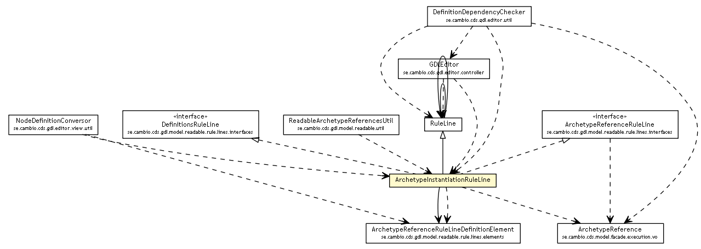

se.cambio.cds.gdl.model.readable.rule.lines
Class ArchetypeInstantiationRuleLine

java.lang.Object
 se.cambio.cds.gdl.model.readable.rule.lines.RuleLine
se.cambio.cds.gdl.model.readable.rule.lines.ArchetypeInstantiationRuleLine
se.cambio.cds.gdl.model.readable.rule.lines.RuleLine
se.cambio.cds.gdl.model.readable.rule.lines.ArchetypeInstantiationRuleLine
- All Implemented Interfaces:
- ArchetypeReferenceRuleLine, DefinitionsRuleLine
public class ArchetypeInstantiationRuleLine
- extends RuleLine
- implements ArchetypeReferenceRuleLine, DefinitionsRuleLine
| Methods inherited from class se.cambio.cds.gdl.model.readable.rule.lines.RuleLine |
addChildRuleLine, detachFromParent, getChildrenRuleLines, getDescription, getLevelSpace, getName, getParentRuleLine, getRuleLineElements, getTermDefinition, isCommented, setCommented, setTermDefinition, toHTMLString, toHTMLString, toString |
ArchetypeInstantiationRuleLine
public ArchetypeInstantiationRuleLine()
getArchetypeReferenceRuleLineDefinitionElement
public ArchetypeReferenceRuleLineDefinitionElement getArchetypeReferenceRuleLineDefinitionElement()
getArchetypeReference
public ArchetypeReference getArchetypeReference()
- Specified by:
getArchetypeReference in interface ArchetypeReferenceRuleLine
setArchetypeReference
public void setArchetypeReference(ArchetypeReference ar)
Copyright © 2013 Cambio. All Rights Reserved.